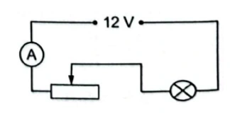
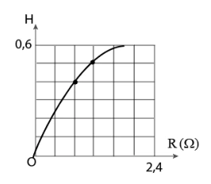
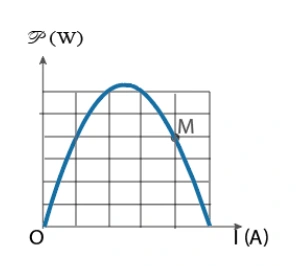
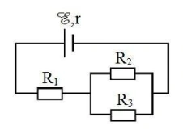
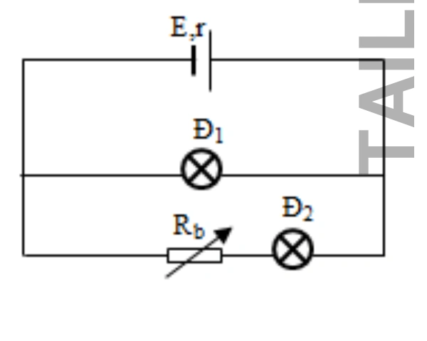
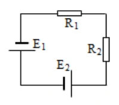
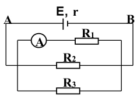
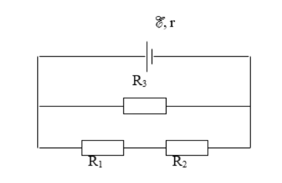

Bài tập — Bài 4 — Năng lượng điện, công suất và định luật Joule–Lenz
Hệ bài tập được biên soạn theo các dạng xuất hiện trong bộ tài liệu Vật lí 11 của dự án. Câu hỏi được giữ ngắn, trực tiếp; độ khó tăng dần và không cố tình thêm dữ kiện gây nhiễu.
Phần A — Trắc nghiệm 4 lựa chọn
Bài 1 — Mức 1 — Nhận biết
Công suất tiêu thụ của điện trở R có thể viết
A. \(P=UI\). B. \(P=U/I\). C. \(P=It/U\). D. \(P=R/U^2\).
Đáp án và lời giải
Chọn A; với điện trở thuần còn có \(P=I^2R=U^2/R\).
Bài 2 — Mức 1 — Nhận biết
Điện trở \(10\,\Omega\) có dòng \(2\) A chạy qua. Công suất tỏa nhiệt là
A. \(5\) W. B. \(20\) W. C. \(40\) W. D. \(200\) W.
Đáp án và lời giải
Chọn C. \(P=I^2R=4\cdot10=40\) W.
Bài 3 — Mức 1 — Nhận biết
Một thiết bị ghi 220 V – 1100 W. Dòng định mức gần bằng
A. \(0,2\) A. B. \(5\) A. C. \(10\) A. D. \(242\) A.
Đáp án và lời giải
Chọn B. \(I=P/U=1100/220=5\) A.
Bài 4 — Mức 1 — Nhận biết
Định luật Joule–Lenz cho nhiệt lượng tỏa ra trên điện trở trong dòng không đổi là
A. \(Q=I^2Rt\). B. \(Q=IR/t\). C. \(Q=U/I\). D. \(Q=R/(I^2t)\).
Đáp án và lời giải
Chọn A.
Phần B — Đúng/Sai
Bài 5 — Mức 2 — Thông hiểu
Điện năng và công suất:
a) \(1\) kWh là đơn vị năng lượng. b) \(1\) kWh = \(3,6\cdot10^6\) J. c) Với điện trở thuần, \(P=U^2/R\). d) Tăng R trong khi giữ I không đổi làm công suất giảm.
Đáp án và lời giải
a) Đúng. b) Đúng. c) Đúng. d) Sai: với I không đổi, \(P=I^2R\) nên tăng.
Bài 6 — Mức 2 — Thông hiểu
Một nguồn có suất điện động E, phát dòng I:
a) Công suất của nguồn là \(\mathcal E I\). b) Công suất hao phí trong nguồn là \(I^2r\). c) Công suất mạch ngoài bằng \(UI\). d) Hiệu suất nguồn luôn 100% nếu r khác 0.
Đáp án và lời giải
a) Đúng. b) Đúng. c) Đúng. d) Sai vì có tổn hao trong.
Phần C — Trả lời ngắn
Bài 7 — Mức 3 — Vận dụng
Ấm điện \(1200\) W hoạt động 15 phút. Tính điện năng theo kWh và J.
Đáp án và lời giải
\(P=1,2\) kW, \(t=0,25\) h nên \(A=0,30\) kWh. Đổi ra J: \(0,30\cdot3,6\cdot10^6=1,08\cdot10^6\) J.
Bài 8 — Mức 3 — Vận dụng
Điện trở \(R=44\,\Omega\) mắc vào \(220\) V trong 5 phút. Tính dòng, công suất và nhiệt lượng.
Đáp án và lời giải
\(I=U/R=220/44=5\) A. \(P=UI=1100\) W. \(Q=Pt=1100\cdot300=3,3\cdot10^5\) J.
Bài 9 — Mức 3 — Vận dụng
Một bếp điện truyền \(1,5\cdot10^6\) J nhiệt hữu ích cho nước khi tiêu thụ \(2,0\cdot10^6\) J điện năng. Tính hiệu suất.
Đáp án và lời giải
\(H=A_{ích}/A_{vào}=1,5/2,0=0,75=75\%\).
Phần D — Vận dụng và vận dụng cao
Bài 10 — Mức 4 — Vận dụng cao
Ấm điện công suất danh định \(1000\) W dùng để đun \(1,5\) kg nước từ \(20^\circ\)C lên \(100^\circ\)C. Hiệu suất 80%, lấy \(c=4200\) J/(kg·K). Tính thời gian đun.
Đáp án và lời giải
Nhiệt nước cần nhận:
\(Q=mc\Delta T=1,5\cdot4200\cdot80=504000\) J.
Vì hiệu suất \(H=0,80\), điện năng cần cung cấp:
\(A=Q/H=504000/0,80=630000\) J.
\(t=A/P=630000/1000=630\) s \(=10,5\) phút.
Ngân hàng bài tập mở rộng
Các bài dưới đây được đánh số nối tiếp phần bài tập phía trên. Đề bài được trình bày bằng Markdown; chỉ đồ thị, hình vẽ hoặc sơ đồ thực sự cần thiết mới được giữ dưới dạng hình. Đáp án và lời giải được đặt trong nút mở rộng ngay dưới từng bài.
Nhận biết — Trả lời ngắn
Bài 11
Công suất điện tiêu thụ trung bình của trường học trên là bao nhiêu kW?
Đáp án và lời giải
Đáp án: \(10\) Hướng dẫn giải:
Dùng \(A=UIt=Pt\), \(P=UI=I^2R=U^2/R\) và định luật Joule \(Q=I^2Rt\).
Công suất điện tiêu thụ trung bình của trường học là:
Vậy kết quả cần tìm là \(10\).
Bài 12
Năng lượng điện tiêu thụ của trường học trên 30 ngày là bao nhiêu kWh?
Đáp án và lời giải
Đáp án: \(3000\) Hướng dẫn giải:
Dùng \(A=UIt=Pt\), \(P=UI=I^2R=U^2/R\) và định luật Joule \(Q=I^2Rt\).
Năng lượng điện tiêu thụ của trường học trong 30 ngày:
Vậy kết quả cần tìm là \(3000\).
Bài 13
Tiền điện của trường học trên phải trả trong 30 ngày với giá điện 2000 đ/kWh là bao nhiêu triệu đồng?
Đáp án và lời giải
Đáp án: 6
Hướng dẫn giải: Tiền điện của trường học phải trả trong 30 ngày: là 2000.3000 = 6 000 000 đồng
Bài 14
Nếu tại các phòng học của trường học trên, các bạn học sinh đều có ý thức tiết kiệm điện bằng cách tắt các thiết bị điện khi không sử dụng. Thời gian dùng các thiết bị điện ở mỗi phòng học chỉ còn 8 giờ mỗi ngày. Tiền điện mà trường học trên đã tiết kiệm được trong một năm học (9 tháng, mỗi tháng 30 ngày) là bao nhiêu triệu đồng?
Đáp án và lời giải
Đáp án: \(10{,}8\)
Hướng dẫn giải: Tiền điện của trường học tiết kiệm được trong một năm học: 2000.(10.2.30.9) = 10 800 000 đồng Sử dụng dữ kiện sau để làm Câu 5 và Câu 6: Các công ty điện lực sử dụng đơn vị kWh để đo năng lượng điện tiêu thụ và tính tiền điện. 1 kWh là năng lượng điện mà một thiết bị điện có công suất 1 kW tiêu thụ trong 1 giờ. Một bình nóng lạnh đang hoạt động ở hiệu điện thế 230 V với công suất 9,5 kW.
Bài 15
Cường độ dòng điện qua bình nóng lạnh là bao nhiêu A? (Kết quả làm tròn đến 3 chữ số có nghĩa)
Đáp án và lời giải
Đáp án: \(41{,}3\) Hướng dẫn giải:
Dùng \(A=UIt=Pt\), \(P=UI=I^2R=U^2/R\) và định luật Joule \(Q=I^2Rt\).
Cường độ dòng điện qua bình nóng lạnh:
Vậy kết quả cần tìm là \(41{,}3\).
Bài 16
Giả sử mỗi ngày, một gia đình sử dụng bình nóng lạnh trong 90 phút. Nếu giá bản điện là 2 500 đồng/kWh thì số tiền gia đình phải trả mỗi ngày để sử dụng bình nóng lạnh là bao nhiêu triệu đồng? (Kết quả làm tròn đến 3 chữ số có nghĩa)
Đáp án và lời giải
Đáp án đã hiệu chỉnh: \(0{,}0356\) triệu đồng/ngày (3 chữ số có nghĩa).
Hướng dẫn giải:
Đổi \(90\) phút \(=1{,}5\) giờ. Điện năng bình nóng lạnh tiêu thụ trong một ngày là
\(A=Pt=9{,}5\cdot1{,}5=14{,}25\ \text{kWh}.\)
Tiền điện phải trả trong một ngày:
\(14{,}25\cdot2500=35\,625\ \text{đồng} =0{,}035625\ \text{triệu đồng}.\)
Làm tròn đến 3 chữ số có nghĩa:
\(\boxed{0{,}0356\ \text{triệu đồng/ngày}}.\)
Đối chiếu nguồn
PDF ghi đáp án \(1{,}07\) triệu đồng. Tuy nhiên con số này là chi phí 30 ngày: \(35\,625\cdot30=1\,068\,750\) đồng \(\approx1{,}07\) triệu đồng, trong khi đề hỏi chi phí mỗi ngày. Vì vậy đáp án được hiệu chỉnh theo đúng đại lượng mà đề yêu cầu.
Bài 17
Nhiệt lượng cần để tăng nhiệt độ của ấm nhôm từ 20°C tới 100°C là bao nhiêu kJ? (Kết quả làm tròn đến 3 chữ số có nghĩa)
Đáp án và lời giải
Đáp án: \(28{,}2\) Hướng dẫn giải:
Dùng \(A=UIt=Pt\), \(P=UI=I^2R=U^2/R\) và định luật Joule \(Q=I^2Rt\).
Vậy kết quả cần tìm là \(28{,}2\).
Bài 18
Nhiệt lượng cần để tăng nhiệt độ của nước từ 20°C tới 100°C là bao nhiêu kJ? (Kết quả làm tròn đến 3 chữ số có nghĩa)
Đáp án và lời giải
Đáp án: \(672\) Hướng dẫn giải:
Dùng \(A=UIt=Pt\), \(P=UI=I^2R=U^2/R\) và định luật Joule \(Q=I^2Rt\).
Vậy kết quả cần tìm là \(672\).
Bài 19
Muốn đun sôi lượng nước đó trong 16 phút thì ấm phải có công suất là bao nhiêu W? (Kết quả làm tròn đến 4 chữ số có nghĩa)
Đáp án và lời giải
Đáp án: \(1000\) Hướng dẫn giải:
Dùng \(A=UIt=Pt\), \(P=UI=I^2R=U^2/R\) và định luật Joule \(Q=I^2Rt\).
Nhiệt lượng tổng cộng cần thiết: Mặt khác nhiệt lượng có ích để đun nước do ấm điện cung cấp trong thời gian 16 phút là: Sử dụng dữ kiện sau để làm Câu 4 và Câu 5: Đèn pin ở hình bên, dùng hai pin mắc nối tiếp nhau. Mỗi pin có suất điện động 1,50 V. Một pin có điện trở trong 0,255Ω, pin còn lại có điện trở trong 0,153Ω. Khi đóng công tắc, cường độ dòng điện trong bóng đèn là 0,600 A.
Vậy kết quả cần tìm là \(1000\).
Bài 20
Điện trở của bóng đèn pin là bao nhiêu Ω? (Kết quả làm tròn sau dấu phẩy hai chữ số thập phân)
Đáp án và lời giải
Đáp án: \(4{,}59\) Hướng dẫn giải:
Dùng \(A=UIt=Pt\), \(P=UI=I^2R=U^2/R\) và định luật Joule \(Q=I^2Rt\).
Vậy kết quả cần tìm là \(4{,}59\).
Bài 21
Công suất chuyển năng lượng ở điện trở trong (thành nội năng trong pin) là bao nhiêu W? (Kết quả làm tròn sau dấu phẩy hai chữ số thập phân)
Đáp án và lời giải
Đáp án: \(0{,}15\) Hướng dẫn giải:
Dùng \(A=UIt=Pt\), \(P=UI=I^2R=U^2/R\) và định luật Joule \(Q=I^2Rt\).
Vậy kết quả cần tìm là \(0{,}15\).
Nhận biết — Trắc nghiệm 4 lựa chọn
Bài 22
Đặt một hiệu điện thế 12 V vào hai đầu một điện trở 8Ω. Nhiệt lượng tỏa ra trên điện trở sau 1 phút là
A. 1800 J.
B. 1080 J.
C. 1008 J.
D. 1090 J.
Đáp án và lời giải
Đáp án: B Hướng dẫn giải:
Dùng \(A=UIt=Pt\), \(P=UI=I^2R=U^2/R\) và định luật Joule \(Q=I^2Rt\).
Công suất tỏa nhiệt Nhiệt lượng tỏa ra điện trở sau 1 phút là:
Đối chiếu kết quả với các lựa chọn, phương án phù hợp là B. 1080 J.
Bài 23
Mắc hai cực của một nguồn điện không đổi có suất điện động 6,0 V và điện trở trong 0,5Ω vào hai đầu một điện trở R 3,5 = Ω để tạo thành mạch kín. Bỏ qua điện trở các dây nối. Nhiệt lượng toả ra trên điện trở R trong 1 phút là
A. 724,5 J.
B. 472,5 J.
C. 274 J.
D. 452,7 J.
Đáp án và lời giải
Đáp án: B Hướng dẫn giải:
Dùng \(A=UIt=Pt\), \(P=UI=I^2R=U^2/R\) và định luật Joule \(Q=I^2Rt\).
Cường độ dòng điện chạy qua điện trở R là Nhiệt lượng toả ra trên điện trở R trong 1 phút là
Đối chiếu kết quả với các lựa chọn, phương án phù hợp là B. 472,5 J.
Bài 24
Một nguồn điện có suất điện động 12V. Khi mắc nguồn điện này với bóng đèn để thành mạch kín thì nó cung cấp một dòng điện có cường độ 0,8A. Công suất của nguồn điện khi đó là
A. 10,7 W.
B. 17,0 W.
C. 9,6 W.
D. 12 W.
Đáp án và lời giải
Đáp án: C Hướng dẫn giải:
Dùng \(A=UIt=Pt\), \(P=UI=I^2R=U^2/R\) và định luật Joule \(Q=I^2Rt\).
Công suất của nguồn điện khi đó:
Đối chiếu kết quả với các lựa chọn, phương án phù hợp là C. 9,6 W.
Bài 25
Tính công suất điện hao phí dưới dạng nhiệt trên một dây cáp dài 15 km dẫn dòng điện có cường độ 100
A. Biết điện trở trên một đơn vị chiều dài của dây cáp này là 0,20 / km Ω .
A. 20 000 W.
B. 45 000 W.
C. 15 000 W.
D. 30 000 W.
Đáp án và lời giải
Đáp án: D Hướng dẫn giải:
Dùng \(A=UIt=Pt\), \(P=UI=I^2R=U^2/R\) và định luật Joule \(Q=I^2Rt\).
Công suất điện hao phí:
Đối chiếu kết quả với các lựa chọn, phương án phù hợp là D. 30 000 W.
Bài 26
Một bóng đèn pin đang sáng với hiệu điện thế giữa hai đầu bóng đèn là 2,2 V và cường độ dòng điện qua đèn là 0,25
A. Năng lượng tiêu thụ trên bóng đèn khi mỗi culông điện tích truyền qua là
A. 2 J.
B. 3,2 J.
C. 3 J.
D. 2,2 J.
Đáp án và lời giải
Đáp án: D Hướng dẫn giải:
Dùng \(A=UIt=Pt\), \(P=UI=I^2R=U^2/R\) và định luật Joule \(Q=I^2Rt\).
Năng lượng tiêu thụ trên bóng đèn khi mỗi culông điện tích truyền qua là
Đối chiếu kết quả với các lựa chọn, phương án phù hợp là D. 2,2 J.
Bài 27
Một acquy ô tô có suất điện động12 V cung cấp dòng điện có cường độ 5 A trong thời gian 2,0 giờ. Năng lượng mà acquy cung cấp trong thời gian này là
A. 342 kJ.
B. 234 kJ.
C. 432 kJ.
D. 324 kJ.
Đáp án và lời giải
Đáp án: C Hướng dẫn giải:
Dùng \(A=UIt=Pt\), \(P=UI=I^2R=U^2/R\) và định luật Joule \(Q=I^2Rt\).
Năng lượng mà acquy cung cấp
Đối chiếu kết quả với các lựa chọn, phương án phù hợp là C. 432 kJ.
Bài 28
Một thiết bị làm nóng trong phòng thí nghiệm có điện trở 5,0 Ω. Thiết bị được nối với bộ acquy 12 V. Bỏ qua điện trở của acquy. Công suất của thiết bị này là
A. 29 W.
B. 17 W.
C. 9,7 W.
D. 12 W.
Đáp án và lời giải
Đáp án: A Hướng dẫn giải:
Dùng \(A=UIt=Pt\), \(P=UI=I^2R=U^2/R\) và định luật Joule \(Q=I^2Rt\).
Cường độ dòng điện qua thiết bị: công suất của thiết bị:
Đối chiếu kết quả với các lựa chọn, phương án phù hợp là A. 29 W.
Bài 29
Người ta dùng số ampe-giờ (Ah) để biểu diễn năng lượng lưu trữ của pin hoặc acquy. Một acquy 60 Ah có thể cung cấp dòng điện có cường độ 60 A trong 1 giờ hoặc 30 A trong 2 giờ. Năng lượng được lưu trữ trong acquy ô tô 12 V, 80 Ah là
A. 3,25.106 J.
B. 3,5.105 J.
C. 3,5.106 J.
D. 3,2.105 J.
Đáp án và lời giải
Đáp án: C Hướng dẫn giải:
Dùng \(A=UIt=Pt\), \(P=UI=I^2R=U^2/R\) và định luật Joule \(Q=I^2Rt\).
Acquy 80 Ah có thể cung cấp dòng điện có cường độ 80 A trong 1 giờ nên năng lượng lưu trữ được trong acquy là
Đối chiếu kết quả với các lựa chọn, phương án phù hợp là C. 3,5.106 J.
Bài 30
Một đoạn mạch gồm một bóng đèn có ghi 9V - 4,5W được mắc nối tiếp với một biến trở và được đặt vào hiệu điện thế không đổi 12V như hình. Điện trở của dây nối và ampe kế rất nhỏ. Bóng đèn sáng bình thường, Năng lượng điện tiêu thụ của toàn mạch trong thời gian 30 phút là
A. 10,8 kJ.
B. 18,0 kJ.
C. 8,0 kJ.
D. 12,8 kJ.

Đáp án và lời giải
Đáp án: A Hướng dẫn giải:
Dùng \(A=UIt=Pt\), \(P=UI=I^2R=U^2/R\) và định luật Joule \(Q=I^2Rt\).
Vì bóng đèn sáng bình thường, nên số chỉ của ampe kế chính là cường độ dòng điện định mức của Điện trở của đoạn mạch: Năng lượng điện tiêu thụ của toàn mạch:
Đối chiếu kết quả với các lựa chọn, phương án phù hợp là A. 10,8 kJ.
Bài 31
Nguồn điện có điện trở trong r 2 = Ω, cung cấp một công suất P cho mạch ngoài là điện trở 1 R 0,5 . = Ω Mắc thêm vào mạch ngoài điện trở 2 R thì công suất tiêu thụ mạch ngoài không đổi. Ta cần mắc 2 R nối tiếp hay song song với 1 R và có giá trị bao nhiêu?
A. Mắc nối tiếp và R2 = 7,5 Ω.
B. Mắc nối tiếp và R2 = 5,5 Ω.
C. Mắc song song và R2 = 7,5 Ω.
D. Mắc song song và R2 = 5,5 Ω.
Đáp án và lời giải
Đáp án: A Hướng dẫn giải:
Dùng \(A=UIt=Pt\), \(P=UI=I^2R=U^2/R\) và định luật Joule \(Q=I^2Rt\).
Khi mạch ngoài chỉ có điện trở R1 thì công suất tiêu thụ mạch ngoài: Nếu mắc thêm điện trở R2 thì điện trở mạch ngoài là R12. Theo đầu bài, ta có: Giải phương trình ta thu được: nên R2 phải mắc nối tiếp với R1 và
Đối chiếu kết quả với các lựa chọn, phương án phù hợp là A. Mắc nối tiếp và R2 = 7,5 Ω.
Bài 32
Có hai điện trở mắc giữa hai điểm có hiệu điện thế là 12 V. Khi R1 nối tiếp R2 thì công suất của mạch là 4 W. Khi R1 mắc song song R2 thì công suất của mạch là 18 W. Nếu R2 > R1, thì R1 và R2 có giá trị là
A. R1 = 12Ω và R2 = 24 Ω .
A. R1 = 24Ω và R2 = 48 Ω .
C. R1 = 10Ω và R2 = 24 Ω .
D. R1 = 6Ω và R2 = 24 Ω .
Đáp án và lời giải
Đáp án: A Hướng dẫn giải:
Dùng \(A=UIt=Pt\), \(P=UI=I^2R=U^2/R\) và định luật Joule \(Q=I^2Rt\).
Do R2 > R1 nên ta chọn
Đối chiếu kết quả với các lựa chọn, phương án phù hợp là A. R1 = 12Ω và R2 = 24 Ω .
Bài 33
Một ắc quy nếu nó phát dòng điện có cường độ 1I 15A = thì công suất điện ở mạch ngoài 1P 136W = , còn nếu nó phát dòng điện có cường độ 2I 6A = thì công suất điện ở mạch ngoài 2P 64,8W = . Suất điện động và điện trở trong của ắc quy là
A. 12 , 0,9 . E V r = = Ω .
B. 10 , 1,1 . E V r = = Ω.
A. 12 , 1,1 . E V r = = Ω.
B. 10 , 0,9 . E V r = = Ω.
Đáp án và lời giải
Đáp án: A Hướng dẫn giải:
Dùng \(A=UIt=Pt\), \(P=UI=I^2R=U^2/R\) và định luật Joule \(Q=I^2Rt\).
Công suất tiêu thụ trên mạch ngoài: Trong hai trường hợp ta có:
Đối chiếu kết quả với các lựa chọn, phương án phù hợp là A. 12 , 0,9 . E V r = = Ω .
Bài 34
Mắc hai đầu một biến trở R vào hai cực của một nguồn điện không đổi. Điều chỉnh giá trị biến trở R. Bỏ qua điện trở của các dây nối. Đồ thị biểu diễn sự phụ thuộc của hiệu suất nguồn điện vào R như hình bên. Để hiệu suất nguồn điện bằng 70% thì giá trị R của biến trở là
A. 2,8 . Ω.
B. 3,8 . Ω.
C. 2,5 . Ω.
D. 3,5 . Ω.

Đáp án và lời giải
Đáp án: A Hướng dẫn giải:
Dùng \(A=UIt=Pt\), \(P=UI=I^2R=U^2/R\) và định luật Joule \(Q=I^2Rt\).
Sử dụng các điểm trên đường đồ thị ( Thay H = 0,7 ta tính được
Đối chiếu kết quả với các lựa chọn, phương án phù hợp là A. 2,8 . Ω.
Bài 35
Một biến trở được mắc vào hai cực của một nguồn điện không đổi có điện trở trong 2,0Ω. Khi thay đổi giá trị biến trở, ta thu được đồ thị biểu diễn sự phụ thuộc của công suất toả nhiệt trên biến trở vào cường độ dòng điện chạy trong mạch như hình. Bỏ qua điện trở của các dây nối. Giá trị biến trở tương ứng với điểm M trên đồ thị bằng bao nhiêu? A.1,5 . Ω.
B. 0,5 . Ω.
C. 2,5 . Ω.
D. 3,5 . Ω.

Đáp án và lời giải
Đáp án: B Hướng dẫn giải:
Dùng \(A=UIt=Pt\), \(P=UI=I^2R=U^2/R\) và định luật Joule \(Q=I^2Rt\).
Ta có biểu thức P theo I: Đường biểu diễn P theo I là một parabol như hình. Khi chỉnh R = r thì công suất tiêu thụ trên R đạt cực đại. Suy ra, dòng điện ứng với trường hợp này: Mặt khác, dòng điện ứng với điểm M: Từ đồ thị, ta thấy:
Đối chiếu kết quả với các lựa chọn, phương án phù hợp là B. 0,5 . Ω.
Bài 36
Hai nguồn điện giống hệt nhau được mắc thành bộ rồi nối hai cực của bộ nguồn với hai đầu của một điện trở thì kết quả là cường độ dòng điện qua điện trở trong trường hợp hai nguồn mắc nối tiếp và hai nguồn mắc song song đều bằng nhau. Hiệu suất của bộ nguồn trong hai trường hợp mắc nối tiếp và song song lần lượt là
A. 1 2 3 3 va .
B. 1 1 4 2 va .
C. 2 1 3 3 va .
D. 1 1 2 4 va .
Đáp án và lời giải
Đáp án: A Hướng dẫn giải:
Dùng \(A=UIt=Pt\), \(P=UI=I^2R=U^2/R\) và định luật Joule \(Q=I^2Rt\).
Trường hợp hai nguồn mắc nối tiếp: Trường hợp hai nguồn mắc song song: Từ (1) và (2) cho Thay vào tính được hiệu suất tương ứng trong hai trường hợp:
Đối chiếu kết quả với các lựa chọn, phương án phù hợp là A. 1 2 3 3 va .
Bài 37
Bóng đèn huỳnh quang công suất 40W chiếu sáng tương đương với bóng đèn dây tóc công suất 120W. Nếu trung bình một ngày thắp sáng 8 tiếng trong một tháng (30 ngày) sẽ tiết kiệm được bao nhiêu số điện?
A. 18,2 kWh.
B. 19,2 kWh.
C. 20,2 kWh.
D. 21,2 kWh.
Đáp án và lời giải
Đáp án: B Hướng dẫn giải: Điện năng mà bóng đèn huỳnh quang tiêu thụ trong 1 tháng là: A1 = P1t = 40.8.60.60.30 = 9,6 kWh Điện năng mà bóng đèn dây tóc tiêu thụ trong một tháng là: A2 = P2t = 120.8.60.60.30 = 28,8 kWh Điện năng tiết kiện được trong một tháng là: A2 – A1 = 19,2 kWh
Bài 38
Cho mạch điện như hình bên. Biết E =12 V; r = 1 Ω; R1 = 3 Ω; R2 = R3 = 4 Ω. Bỏ qua điện trở của dây nối. Công suất tiêu thụ điện của R1 là
A. 4,5 W.
B. 12,0 W.
C. 9,0 W.
D. 6,0 W.

Đáp án và lời giải
Đáp án: B Hướng dẫn giải:
Dùng \(A=UIt=Pt\), \(P=UI=I^2R=U^2/R\) và định luật Joule \(Q=I^2Rt\).
, P1 = R1 I12 = 3.22 = 12W
Đối chiếu kết quả với các lựa chọn, phương án phù hợp là B. 12,0 W.
Bài 39
Cho mạch điện như hình vẽ. 12,5 ; 0,4 E V r = = Ω; Đèn Đ1 có chỉ số 12V – 6W, đèn Đ2 có chỉ số 6V – 4,5W. Khi 8 b R = Ω thì đèn Đ1 và Đ2 sáng bình thường. Tính công suất của nguồn điện.
A. 16,525 W.
B. 12,625 W.
C. 15,625 W.
D. 15,525 W.

Đáp án và lời giải
Đáp án: C Hướng dẫn giải:
Dùng \(A=UIt=Pt\), \(P=UI=I^2R=U^2/R\) và định luật Joule \(Q=I^2Rt\).
Đèn sáng bình thường nên I1 = Idm1, I2b = Idm2, I = I1 + I2b = 0,5+0,75 = 1,25 Png = EI = 12,5.1,25 = 15,625W
Đối chiếu kết quả với các lựa chọn, phương án phù hợp là C. 15,625 W.
Bài 40
Cho mạch điện gồm nhánh \(R_1\) nối tiếp \(R_2\) mắc song song với nhánh \(R_3\); ampe kế mắc nối tiếp với \(R_3\). Biết \(r=1,5\ \Omega\), \(R_1=R_3=10\ \Omega\), \(R_2=5\ \Omega\). Bỏ qua điện trở của ampe kế và dây nối. Số chỉ của ampe kế là 1,2 A. Công suất của nguồn điện là
A. 24 W.
B. 30 W.
C. 18 W.
D. 37,5 W.
Đáp án và lời giải
Đáp án: B Hướng dẫn giải:
Dùng \(A=UIt=Pt\), \(P=UI=I^2R=U^2/R\) và định luật Joule \(Q=I^2Rt\).
I3 = 1,2A, R12 = 10+5 = 15Ω, U12 = U3 = I3R3 = 1,2.10 = 12V, , I = I3 + I12 = 1,2 + 0,8 = 2A = Ω, P = EI = I2(RN + r) = 22(6 + 1,5) = 30W
Đối chiếu kết quả với các lựa chọn, phương án phù hợp là B. 30 W.
Bài 41
Cho mạch điện như hình vẽ, nguồn điện có E1=12V, E2=6V và điện trở trong không đáng kể. 1 2 4 , 8 R R = Ω = Ω. Tính năng lượng mà mỗi nguồn cung cấp trong 5 phút.
A. W1 = 5400 J, W2 = 2700 J.
B. W1 = 2700 J, W2 = 5400 J.
C. W1 = 8100 J, W2 = 2700 J.
D. W1 = 5400 J, W2 = 8100 J.

Đáp án và lời giải
Đáp án: A Hướng dẫn giải:
Dùng \(A=UIt=Pt\), \(P=UI=I^2R=U^2/R\) và định luật Joule \(Q=I^2Rt\).
Hai nguồn mắc nối tiếp với 2 điện trở mắc nối tiếp
Đối chiếu kết quả với các lựa chọn, phương án phù hợp là A. W1 = 5400 J, W2 = 2700 J.
Bài 42
Một nguồn điện có suất điện động E= 6V, điện trở trong r= 2Ω, mạch ngoài có biến trở R. Thay đổi R thì thấy khi R=R1 hoặc R=R2, công suất tiêu thụ ở mạch ngoài không đổi và bằng 4W. R1 và R2 bằng
A. R1 = 1Ω; R2 = 4Ω.
B. R1 = R2 = 2Ω.
C. R1 = 2Ω; R2 = 3Ω.
D. R1 = 3Ω; R2 = 1Ω.
Đáp án và lời giải
Đáp án: A Hướng dẫn giải:
Dùng \(A=UIt=Pt\), \(P=UI=I^2R=U^2/R\) và định luật Joule \(Q=I^2Rt\).
Đối chiếu kết quả với các lựa chọn, phương án phù hợp là A. R1 = 1Ω; R2 = 4Ω.
Bài 43
Xác định điện trở trong của nguồn điện, biết rằng khi điện trở ngoài là R1 = 2Ω hoặc R2 = 8Ω thì công suất toả nhiệt trên hai điện trở đó bằng nhau
A. 4Ω.
B. 2Ω.
C. 3Ω.
D. 1Ω.
Đáp án và lời giải
Đáp án: A Hướng dẫn giải:
Dùng \(A=UIt=Pt\), \(P=UI=I^2R=U^2/R\) và định luật Joule \(Q=I^2Rt\).
Đối chiếu kết quả với các lựa chọn, phương án phù hợp là A. 4Ω.
Bài 44
Năng lượng điện tiêu thụ của một đoạn mạch được đo bằng
A. công suất tiêu thụ của đoạn mạch.
B. điện trở của đoạn mạch.
C. công của lực điện thực hiện khi dịch chuyển các điện tích qua đoạn mạch.
D. hiệu điện thế giữa hai đầu đoạn mạch.
Đáp án và lời giải
Đáp án: C Hướng dẫn giải:
Dùng \(A=UIt=Pt\), \(P=UI=I^2R=U^2/R\) và định luật Joule \(Q=I^2Rt\).
Đối chiếu kết quả với các lựa chọn, phương án phù hợp là C. công của lực điện thực hiện khi dịch chuyển các điện tích qua đoạn mạch.
Bài 45
Một bóng đèn có công suất định mức là 100 W. Nếu bóng đèn được sử dụng liên tục trong 5 giờ, thì điện năng tiêu thụ của bóng đèn là
A. 500 Wh.
B. 1800 kJ.
C. 500 kJ.
D. 1800 Wh.
Đáp án và lời giải
Đáp án: A Hướng dẫn giải:
Dùng \(A=UIt=Pt\), \(P=UI=I^2R=U^2/R\) và định luật Joule \(Q=I^2Rt\).
A = P.t = 100.5 = 500 Wh.
Đối chiếu kết quả với các lựa chọn, phương án phù hợp là A. 500 Wh.
Bài 46
Công suất tiêu thụ điện của một đoạn mạch là
A. năng lượng điện mà đoạn mạch tiêu thụ trong một đơn vị thời gian.
B. lượng điện tích dịch chuyển qua đoạn mạch trong một đơn vị thời gian.
C. công của lực điện thực hiện khi dịch chuyển một đơn vị điện tích.
D. điện trở của đoạn mạch.
Đáp án và lời giải
Đáp án: A Hướng dẫn giải:
Dùng \(A=UIt=Pt\), \(P=UI=I^2R=U^2/R\) và định luật Joule \(Q=I^2Rt\).
Đối chiếu kết quả với các lựa chọn, phương án phù hợp là A. năng lượng điện mà đoạn mạch tiêu thụ trong một đơn vị thời gian.
Bài 47
Một gia đình sử dụng một máy điều hòa có công suất 1200 W trung bình 3 giờ mỗi ngày. Biết giá tiền điện là 2000 đồng/kWh. Tiền điện phải trả cho việc sử dụng máy điều hòa trong một tháng (30 ngày) là
A. 216000 đồng.
B. 21600 đồng.
C. 72000 đồng.
D. 7200 đồng.
Đáp án và lời giải
Đáp án: A Hướng dẫn giải: Điện năng tiêu thụ trong một ngày: A_ngày = 1200W x 3h = 3600Wh = 3,6kWh Điện năng tiêu thụ trong một tháng: A_tháng = 3,6kWh/ngày x 30 ngày = 108kWh Số tiền điện phải trả: Tiền = 108kWh x 2000 đồng/kWh = 216000 đồng
Bài 48
Một đoạn mạch có điện trở R tiêu thụ công suất P. Nếu tăng hiệu điện thế giữa hai đầu đoạn mạch lên 2 lần thì công suất tiêu thụ của đoạn mạch sẽ
A. tăng 2 lần.
B. tăng 4 lần.
C. giảm 2 lần.
D. giảm 4 lần.
Đáp án và lời giải
Đáp án: B Hướng dẫn giải: P = U2 / R nên U tăng 2 thì P tăng 4.
Bài 49
Một bóng đèn có ghi 220 V – 60 W. Nếu mắc bóng đèn vào hiệu điện thế 110 V thì công suất tiêu thụ của bóng đèn là
A. 60W.
B. 30W.
C. 15W.
D. 45 W.
Đáp án và lời giải
Đáp án: C Hướng dẫn giải: Công suất tỉ lệ thuận với bình phương hiệu điện thế, nên khi giảm hiệu điện thế đi 2 lần thì công suất giảm đi 4 lần: P' = P/4 = 60/4 = 15W
Bài 50
Trong đoạn mạch chỉ có điện trở thuần, với thời gian như nhau, nếu cường độ dòng điện giảm 2 lần thì nhiệt lượng tỏa ra trên mạch
A. giảm 2 lần.
B. giảm 4 lần.
C. tăng 2 lần.
D. tăng 4 lần.
Đáp án và lời giải
Đáp án: C Hướng dẫn giải:
Dùng \(A=UIt=Pt\), \(P=UI=I^2R=U^2/R\) và định luật Joule \(Q=I^2Rt\).
Đối chiếu kết quả với các lựa chọn, phương án phù hợp là C. tăng 2 lần.
Bài 51
Điện năng biến đổi hoàn toàn thành nhiệt năng ở dụng cụ hay thiết bị điện nào sau đây?
A. Quạt điện.
B. Ấm điện.
C. Ắc quy đang nạp điện.
D. Bình điện phân.
Đáp án và lời giải
Đáp án: B Hướng dẫn giải:
Dùng \(A=UIt=Pt\), \(P=UI=I^2R=U^2/R\) và định luật Joule \(Q=I^2Rt\).
Đối chiếu kết quả với các lựa chọn, phương án phù hợp là B. Ấm điện.
Bài 52
Khi một động cơ điện đang hoạt động thì điện năng được biến đổi thành
A. năng lượng cơ học.
B. năng lượng cơ học và năng lượng nhiệt.
C. năng lượng cơ học, năng lượng nhiệt và năng lượng điện trường.
D. năng lượng cơ học, năng lượng nhiệt và năng lượng ánh sáng.
Đáp án và lời giải
Đáp án: B Hướng dẫn giải:
Dùng \(A=UIt=Pt\), \(P=UI=I^2R=U^2/R\) và định luật Joule \(Q=I^2Rt\).
Đối chiếu kết quả với các lựa chọn, phương án phù hợp là B. năng lượng cơ học và năng lượng nhiệt.
Bài 53
Trong các nhận xét sau về công suất điện của một đoạn mạch, nhận xét nào không đúng?
A. Công suất tỉ lệ thuận với hiệu điện thế hai đầu mạch.
B. Công suất tỉ lệ thuận với cường độ dòng điện chạy qua mạch.
C. Công suất tỉ lệ nghịch với thời gian dòng điện chạy qua mạch.
D. Công suất có đơn vị là oát (W).
Đáp án và lời giải
Đáp án: C Hướng dẫn giải:
Dùng \(A=UIt=Pt\), \(P=UI=I^2R=U^2/R\) và định luật Joule \(Q=I^2Rt\).
Đối chiếu kết quả với các lựa chọn, phương án phù hợp là C. Công suất tỉ lệ nghịch với thời gian dòng điện chạy qua mạch.
Bài 54
Trên một bóng đèn có ghi 12 V – 1,25
A. Kết luận nào dưới đây là sai?
A. Bóng đèn này luôn có công suất là 15 W khi hoạt động.
B. Bóng đèn này chỉ có công suất 15 W khi mắc nó vào hiệu điện thế 12 V.
C. Bóng đèn này tiêu thụ điện năng 15 J trong 1 giây khi hoạt động bình thường.
D. Bóng đèn này có điện trở 9,6 Ohm khi hoạt động bình thường.
Đáp án và lời giải
Đáp án: A Hướng dẫn giải: Bóng đèn này chỉ có công suất 15 W khi mắc nó vào hiệu điện thế 12 V
Bài 55
Ngoài đơn vị là oát (W) công suất điện có thể có đơn vị là
A. Jun (J)
B. Vôn trên am pe (V/A)
C. Jun trên giây J/s
D. Ampe nhân giây (A.s)
Đáp án và lời giải
Đáp án: C Hướng dẫn giải:
Dùng \(A=UIt=Pt\), \(P=UI=I^2R=U^2/R\) và định luật Joule \(Q=I^2Rt\).
Đối chiếu kết quả với các lựa chọn, phương án phù hợp là C. Jun trên giây J/s
Bài 56
Hai bóng đèn có hiệu điện thế định mức lần lượt là \(U_1\) và \(U_2\). Nếu công suất định mức của hai bóng bằng nhau thì tỉ số hai điện trở \(R_1/R_2\) là
A. \(\dfrac{U_1}{U_2}\).
B. \(\dfrac{U_2}{U_1}\).
C. \(\left(\dfrac{U_1}{U_2}\right)^2\).
D. \(\left(\dfrac{U_2}{U_1}\right)^2\).
Đáp án và lời giải
Đáp án: C. Hướng dẫn giải:
Với bóng đèn hoạt động ở định mức,
Hai bóng có cùng công suất định mức nên
\(\displaystyle \frac{U_1^2}{R_1}=\frac{U_2^2}{R_2} \quad\Rightarrow\quad \frac{R_1}{R_2}=\left(\frac{U_1}{U_2}\right)^2.\)
Bài 57
Trong mạch điện chỉ có R, khi dòng điện có cường độ I chạy qua mạch thì nhiệt lượng toả ra trong đoạn mạch trong khoảng thời gian t được tính bằng công thức
A. Q = R2It.
B. Q = U2I t.
C. Q = RI2t.
D. Q = RIt.
Đáp án và lời giải
Đáp án: C Hướng dẫn giải: Nhiệt lượng Q = RI2t
Bài 58
Một nguồn điện có suất điện động 11,5 V và điện trở trong 0,8 Ω được nối với mạch ngoài gồm các điện trở tạo thành một mạch kín. Nguồn phát dòng điện có cường độ 1
A. Công suất điện mà nguồn cung cấp cho mạch ngoài là
A. 10,7 W.
B. 17,0 W.
C. 9,7 W.
D. 12 W.
Đáp án và lời giải
Đáp án: A Hướng dẫn giải:
Dùng \(A=UIt=Pt\), \(P=UI=I^2R=U^2/R\) và định luật Joule \(Q=I^2Rt\).
Công suất điện mà nguồn cung cấp cho mạch ngoài:
Đối chiếu kết quả với các lựa chọn, phương án phù hợp là A. Công suất điện mà nguồn cung cấp cho mạch ngoài là
Bài 59
Một acquy có suất điện động 15,0 V. Hiệu điện thế giữa hai cực của acquy là 11,6 V khi nó cung cấp công suất điện 20,0 W cho điện trở ngoài R. Điện trở trong của acquy này là
A. 1,972 Ω.
B. 1,297 Ω.
C. 2,972 Ω.
D. 2,729 Ω.
Đáp án và lời giải
Đáp án: A Hướng dẫn giải:
Dùng \(A=UIt=Pt\), \(P=UI=I^2R=U^2/R\) và định luật Joule \(Q=I^2Rt\).
Đối chiếu kết quả với các lựa chọn, phương án phù hợp là A. 1,972 Ω.
Nhận biết — Đúng/Sai
Bài 60
Khi nói về công suất điện.
a) Công suất điện là đại lượng đo bằng Jun (J). b) Công suất điện cho biết tốc độ thực hiện công của dòng điện. c) Nếu hiệu điện thế không đổi thì công suất điện tỉ lệ nghịch với điện trở của mạch. d) Công suất điện không phụ thuộc vào hiệu điện thế đặt vào mạch.
Đáp án và lời giải
Hướng dẫn giải: a) Công suất điện là đại lượng đo bằng Oát (W). b) Công suất điện cho biết tốc độ thực hiện công của dòng điện (P = A/t). c) Ta có , nếu U không đổi, R tăng thì P giảm. Vậy công suất tỉ lệ nghịch với R. d) Công suất điện phụ thuộc vào hiệu điện thế đặt vào mạch (P = UI).
Bài 61
Một nguồn 9,00 V cung cấp dòng điện 1,34 A cho bóng đèn trong 2 phút.
a) Điện tích đi qua đèn là 160,8
C. b) Số electron chuyển qua đèn là 1,01.1021 electron. c) Năng lượng mà nguồn cung cấp cho đèn 1,45.103 J. d) Công suất của nguồn là 12,06 kW.
Đáp án và lời giải
Hướng dẫn giải:
Dùng \(A=UIt=Pt\), \(P=UI=I^2R=U^2/R\) và định luật Joule \(Q=I^2Rt\).
a) Điện tích đi qua đèn: b) Số electron chuyển qua đèn: c) Năng lượng mà nguồn cung cấp cho đèn: d) Công suất của nguồn:
Bài 62
Một bộ pin có suất điện động 12,0 V và điện trở trong r = 0,05 Ω. Người ta mắc vào hai cực của nó một điện trở R = 3,00 Ω.
a) Cường độ dòng điện trong mạch là 4
A. b) Hiệu điện thế giữa hai cực của bộ pin là 11,8 V. c) Công suất điện cung cấp cho điện trở R là 46,3 W. d) Công suất điện cung cấp cho điện trở trong là 0,772 W.
Đáp án và lời giải
Đáp án: a) Sai; b) Đúng; c) Đúng; d) Đúng.
Hướng dẫn giải:
Với nguồn \(\xi=12\) V, điện trở ngoài \(R=3\ \Omega\) và điện trở trong \(r=0{,}05\ \Omega\):
a) Sai. \(I=\xi/(R+r)=12/3{,}05\approx3{,}93\) A.
b) Đúng. Hiệu điện thế mạch ngoài \(U=IR\approx3{,}93\cdot3\approx11{,}8\) V.
c) Đúng. Công suất trên điện trở ngoài \(P_R=I^2R\approx46{,}3\) W.
d) Đúng. Công suất hao phí trong nguồn \(P_r=I^2r\approx0{,}772\) W.
Bài 63
Cho mạch điện có sơ đồ như hình vẽ: E = 24 V, r = 0,5 Ω; R1 = 12 Ω, R3 = 28 Ω. Bỏ qua điện trở của ampe kế và dây nối. Số chỉ của ampe kế là 1,75
A. a) Cường độ dòng điện chạy qua điện trở R1 là 1,75
A. b) Hiệu điện thế mạch ngoài là 20 V. c) Cường độ dòng điện chạy qua điện trở R3 là 0,75
A. d) Công suất tỏa nhiệt trên điện trở R2 là 73,5 W.

Đáp án và lời giải
Đáp án: a) Đúng; b) Sai; c) Đúng; d) Đúng.
Hướng dẫn giải:
a) Đúng. Ampe kế nối tiếp nhánh \(R_1\) nên số chỉ chính là \(I_1=1{,}75\) A theo dữ kiện/sơ đồ.
b) Sai. Điện áp hai đầu nhóm song song là \(U=I_1R_1=1{,}75\cdot12=21\) V, không phải \(20\) V.
c) Đúng. \(I_3=U/R_3=21/28=0{,}75\) A.
d) Đúng. Dòng mạch chính \(I=(24-21)/0{,}5=6\) A. Do đó \(I_2=I-I_1-I_3=6-1{,}75-0{,}75=3{,}5\) A và \(P_2=UI_2=21\cdot3{,}5=73{,}5\) W.
Bài 64
Một bếp điện khi hoạt động bình thường có điện trở 80 Ω và cường độ dòng điện qua bếp khi đó là 2,5A. Mỗi ngày sử dụng bếp này trong 3 giờ.
E, r R1 R
a) Nhiệt lượng mà bếp tỏa ra trong thời gian 1 phút là 30 kJ. b) Dùng bếp điện trên để đun sôi 1,5 lít nước có nhiệt độ ban đầu là 250C thì thời gian đun sôi nước là 20 phút. Coi rằng nhiệt lượng cần thiết để đun sôi nước là có ích. Biết nhiệt dung riêng c) ủa nước là 4200 J/kg.K, khối lượng riêng của nước là D = 1000 kg/m3. Hiệu suất của bếp là 80%. c) Điện năng bếp điện tiêu thụ trong 30 ngày là 45 kWh. d) Tiền điện phải trả cho việc sử dụng bếp điện đó trong 30 ngày là 90 000 đồng nếu giá 1 kWh là 2000 đồng.
Đáp án và lời giải
Hướng dẫn giải:
Dùng \(A=UIt=Pt\), \(P=UI=I^2R=U^2/R\) và định luật Joule \(Q=I^2Rt\).
a) Nhiệt lượng mà bếp tỏa ra trong thời gian 1 phút: b) Nhiệt lượng mà nước thu vào là: Nhiệt lượng mà bếp tỏa ra trong thời gian 20 phút: Hiệu suất của bếp là: c) Điện năng bếp điện tiêu thụ trong 30 ngày là: d) Tiền điện phải trả là:
Bài 65
Hai dây điện trở của một bếp điện được mắc song song giữa hai điểm A và B có hiệu điện thế 220V. Cường độ dòng điện qua mỗi dây có giá trị lần lượt là 1,5A và 3,5A.
a) Điện trở của dây thứ nhất là 146,7 Ω. b) Điện trở của dây thứ hai là 63 Ω. c) Điện trở tương đương của đoạn mạch là 40 Ω. d) Để có công suất của bếp là 1600W, người ta phải cắt bỏ bớt một đoạn của dây thứ nhất rồi lại mắc song song với dây thứ hai vào hiệu điện thế nói trên. Điện trở của sợi dây bị cắt bỏ đó là 88,4 Ω.
Đáp án và lời giải
Hướng dẫn giải:
Dùng \(A=UIt=Pt\), \(P=UI=I^2R=U^2/R\) và định luật Joule \(Q=I^2Rt\).
a) Điện trở của dây thứ nhất là b) Điện trở của dây thứ hai là c) Điện trở tương đương của đoạn mạch là d) Để có công suất là 1600W Dây 2 không đổi nên công suất tiêu thụ của dây 2 vẫn là Công suất của dây thứ nhất là: Điện trở của dây thứ nhất sau khi cắt: Vậy điện trở của sợi dây bị cắt bỏ đó là:
Bài 66
Khi nói về năng lượng và công suất điện.
a) Năng lượng điện tiêu thụ của một đoạn mạch được đo bằng công c) ủa lực điện thực hiện khi dịch chuyển các điện tích. b) Công suất tiêu thụ năng lượng điện của một đoạn mạch là năng lượng điện mà đoạn mạch tiêu thụ trong một đơn vị thời gian. c) Năng lượng điện có thể chuyển hóa thành các dạng năng lượng khác. d) Công suất điện có đơn vị là Jun (J).
Đáp án và lời giải
Hướng dẫn giải: a) Năng lượng điện tiêu thụ của một đoạn mạch được đo bằng công của lực điện thực hiện khi dịch chuyển các điện tích. b) Công suất tiêu thụ năng lượng điện của một đoạn mạch là năng lượng điện mà đoạn mạch tiêu thụ trong một đơn vị thời gian. c) Năng lượng điện có thể chuyển hóa thành các dạng năng lượng khác. d) Công suất điện có đơn vị là Oát (W).
Bài 67
Cho mạch điện như hình vẽ: R1 = 1Ω, R2 = 5Ω; R3 = 12Ω; E= 3V, r = 1Ω. Bỏ qua điện trở của dây nối.
a) Mạch ngoài gồm điện trở R3 mắc song song với R1 nối tiếp R2. b) Tổng điện trở mạch ngoài là 4Ω. c) Cường độ dòng điện chạy trong mạch là 0,8 A d) Công suất mạch ngoài là 1,55 W.

Đáp án và lời giải
Đáp án: a) Đúng; b) Đúng; c) Sai; d) Sai.
Hướng dẫn giải:
a) Đúng. Rút gọn đúng theo các nút của sơ đồ cho \(R_{12}=6\ \Omega\).
b) Đúng. \(R_{12}\) song song với \(R_3=12\ \Omega\), nên \(R_N=6\parallel12=4\ \Omega\).
c) Sai. Với \(\xi=3\) V và \(r=1\ \Omega\), dòng mạch chính \(I=\xi/(R_N+r)=3/5=0{,}6\) A, không phải \(0{,}8\) A.
d) Sai. Công suất mạch ngoài \(P_N=I^2R_N=0{,}6^2\cdot4=1{,}44\) W, không phải \(1{,}55\) W.
Thông hiểu — Trắc nghiệm 4 lựa chọn
Bài 68
Công thức nào trong các công thức sau đây cho phép xác định năng lượng điện tiêu thụ của đoạn mạch (trong trường hợp dòng điện không đổi)?
A. 2 A UI t. =
B. 2 A U It. =
C. A UIt. =
D. UI A . t =
Đáp án và lời giải
Đáp án: C Hướng dẫn giải:
Dùng \(A=UIt=Pt\), \(P=UI=I^2R=U^2/R\) và định luật Joule \(Q=I^2Rt\).
Đối chiếu kết quả với các lựa chọn, phương án phù hợp là C. A UIt. =
Bài 69
Đơn vị đo năng lượng điện tiêu thụ là
A. kW.
B. kV.
C. k . Ω
D. kWh.
Đáp án và lời giải
Đáp án: D Hướng dẫn giải:
Dùng \(A=UIt=Pt\), \(P=UI=I^2R=U^2/R\) và định luật Joule \(Q=I^2Rt\).
Đối chiếu kết quả với các lựa chọn, phương án phù hợp là D. kWh.
Bài 70
Đơn vị của công suất điện là
A. Oát.
B. Jun.
C. Ampe.
D. Vôn.
Đáp án và lời giải
Đáp án: A Hướng dẫn giải:
Dùng \(A=UIt=Pt\), \(P=UI=I^2R=U^2/R\) và định luật Joule \(Q=I^2Rt\).
Đối chiếu kết quả với các lựa chọn, phương án phù hợp là A. Oát.
Bài 71
Dụng cụ nào sau đây được dùng để đo điện năng tiêu thụ
A. .
B. .
C. .
D. .
Đáp án và lời giải
Đáp án: B Hướng dẫn giải:
Dùng \(A=UIt=Pt\), \(P=UI=I^2R=U^2/R\) và định luật Joule \(Q=I^2Rt\).
Đối chiếu kết quả với các lựa chọn, phương án phù hợp là B. .
Bài 72
Công của nguồn điện trong thời gian t được tính bằng công thức
A. A = E It.
B. A = E I/t.
C. A = E t/I.
D. A = It/E .
Đáp án và lời giải
Đáp án: A Hướng dẫn giải:
Dùng \(A=UIt=Pt\), \(P=UI=I^2R=U^2/R\) và định luật Joule \(Q=I^2Rt\).
Đối chiếu kết quả với các lựa chọn, phương án phù hợp là A. A = E It.
Bài 73
Công suất của nguồn được tính bằng công thức
A. P = E /r.
B. P = E r.
C. P =E .I.
D. P = E I/r.
Đáp án và lời giải
Đáp án: C Hướng dẫn giải:
Dùng \(A=UIt=Pt\), \(P=UI=I^2R=U^2/R\) và định luật Joule \(Q=I^2Rt\).
Đối chiếu kết quả với các lựa chọn, phương án phù hợp là C. P =E .I.
Bài 74
Công của dòng điện được đo bằng
A. Ampe kế.
B. Vôn kế.
C. Tĩnh điện kế.
D. Công tơ điện.
Đáp án và lời giải
Đáp án: D Hướng dẫn giải:
Dùng \(A=UIt=Pt\), \(P=UI=I^2R=U^2/R\) và định luật Joule \(Q=I^2Rt\).
Đối chiếu kết quả với các lựa chọn, phương án phù hợp là D. Công tơ điện.
Bài 75
Theo định luật Jun-Len xơ, điện năng biến đổi thành
A. hóa năng.
B. nhiệt năng.
C. cơ năng.
D. nội năng.
Đáp án và lời giải
Đáp án: B Hướng dẫn giải:
Dùng \(A=UIt=Pt\), \(P=UI=I^2R=U^2/R\) và định luật Joule \(Q=I^2Rt\).
Đối chiếu kết quả với các lựa chọn, phương án phù hợp là B. nhiệt năng.
Bài 76
Điện năng tiêu thụ của đoạn mạch không tỉ lệ thuận với
A. hiệu điện thế hai đầu mạch.
B. nhiệt độ của vật dẫn trong mạch.
C. cường độ dòng điện trong mạch.
D. thời gian dòng điện chạy qua mạch.
Đáp án và lời giải
Đáp án: B Hướng dẫn giải:
Dùng \(A=UIt=Pt\), \(P=UI=I^2R=U^2/R\) và định luật Joule \(Q=I^2Rt\).
Đối chiếu kết quả với các lựa chọn, phương án phù hợp là B. nhiệt độ của vật dẫn trong mạch.
Bài 77
Trong một đoạn mạch, công của dòng điện bằng
A. nhiệt lượng tỏa ra trên dây nối.
B. tích của suất điện động với cường độ dòng điện.
C. điện năng tiêu thụ trên đoạn mạch.
D. tích của hiệu điện thế giữa 2 đầu đoạn mạch và cường độ dòng điện qua đoạn mạch.
Đáp án và lời giải
Đáp án: C Hướng dẫn giải:
Dùng \(A=UIt=Pt\), \(P=UI=I^2R=U^2/R\) và định luật Joule \(Q=I^2Rt\).
Đối chiếu kết quả với các lựa chọn, phương án phù hợp là C. điện năng tiêu thụ trên đoạn mạch.
Bài 78
Công suất của nguồn điện được xác định bằng
A. công của dòng điện chạy trong mạch kín sinh ra trong một giây.
B. công của dòng điện thực hiện khi dịch chuyển 1 đơn vị điện tích dương chạy trong 1 mạch kín.
C. lượng điện tích mà nguồn điện sinh ra trong 1 giây.
D. công mà lực lạ thực hiện khi dịch chuyển 1 đơn vị điện tích dương ngược chiều điện trường bên trong nguồn.
Đáp án và lời giải
Đáp án: A Hướng dẫn giải:
Dùng \(A=UIt=Pt\), \(P=UI=I^2R=U^2/R\) và định luật Joule \(Q=I^2Rt\).
Đối chiếu kết quả với các lựa chọn, phương án phù hợp là A. công của dòng điện chạy trong mạch kín sinh ra trong một giây.
Bài 79
Hai nguồn điện có ghi 20V và 40V, nhận xét nào sau đây là đúng?
A. Hai nguồn này luôn tạo ra một hiệu điện thế 20V và 40V cho mạch ngoài.
B. Khả năng sinh công của hai nguồn là 20J và 40J.
C. Khả năng sinh công của nguồn thứ nhất bằng một nửa nguồn thứ hai.
D. Nguồn thứ nhất luôn sinh công bằng một nửa nguồn thứ hai.
Đáp án và lời giải
Đáp án: C Hướng dẫn giải:
Dùng \(A=UIt=Pt\), \(P=UI=I^2R=U^2/R\) và định luật Joule \(Q=I^2Rt\).
Đối chiếu kết quả với các lựa chọn, phương án phù hợp là C. Khả năng sinh công của nguồn thứ nhất bằng một nửa nguồn thứ hai.
Bài 80
Hai đầu đoạn mạch có một hiệu điện thế không đổi, nếu điện trở của mạch giảm 2 lần thì công suất điện của mạch
A. tăng 4 lần.
B. không đổi.
C. giảm 4 lần.
D. tăng 2 lần.
Đáp án và lời giải
Đáp án: D Hướng dẫn giải: P = U2/R, khi U không đổi R giảm 2 lần thì P tăng 2 lần.
Bài 81
Trong một đoạn mạch có điện trở thuần không đổi, nếu muốn tăng công suất tỏa nhiệt lên 4 lần thì phải
A. tăng hiệu điện thế 2 lần.
B. tăng hiệu điện thế 4 lần.
C. giảm hiệu điện thế 2 lần.
D. giảm hiệu điện thế 4 lần.
Đáp án và lời giải
Đáp án: A Hướng dẫn giải: P = U2/R, khi R không đổi để P tăng 4 lần thì U tăng 2 lần.
Bài 82
Hai bóng đèn có công suất lần lượt là P1 < P2 đều làm việc bình thường ở hiệu điện thế U. Cường độ dòng điện qua mỗi bóng đèn và điện trở của bóng nào lớn hơn?
A. I1 < I2 và R1>R2 .
B. I1 > I2 và R1 > R2.
C. I1 < I2 và R1<R2 .
D. I1 > I2 và R1 < R2.
Đáp án và lời giải
Đáp án: A Hướng dẫn giải:
Dùng \(A=UIt=Pt\), \(P=UI=I^2R=U^2/R\) và định luật Joule \(Q=I^2Rt\).
Đối chiếu kết quả với các lựa chọn, phương án phù hợp là A. I1 < I2 và R1>R2 .
Bài 83
Theo định luật Jun – Len – xơ, nhiệt lượng toả ra trên dây dẫn tỉ lệ
A. với cường độ dòng điện qua dây dẫn.
C. nghịch với bình phương cường độ dòng điện qua dây dẫn.
B. với bình phương điện trở của dây dẫn.
D. với bình phương cường độ dòng điện qua dây dẫn.
Đáp án và lời giải
Đáp án: D Hướng dẫn giải:
Dùng \(A=UIt=Pt\), \(P=UI=I^2R=U^2/R\) và định luật Joule \(Q=I^2Rt\).
Đối chiếu kết quả với các lựa chọn, phương án phù hợp là D. với bình phương cường độ dòng điện qua dây dẫn.
Vận dụng — Trắc nghiệm 4 lựa chọn
Bài 84
Một gia đình sử dụng 2 bóng đèn (mỗi bóng 40 W), một quạt điện 75 W và một tivi 80 W mỗi ngày trung bình 5 giờ. Nếu các thiết bị hoạt động bình thường thì điện năng tiêu thụ của gia đình trong một ngày là
A. 1,175 kWh.
B. 117,5 Wh.
C. 1150 kJ.
D. 1510 kJ.
Đáp án và lời giải
Đáp án: A. \(1{,}175\) kWh.
Hướng dẫn giải: Tổng công suất các thiết bị: \(P=2\cdot40+75+80=235\) W.
Điện năng tiêu thụ trong \(5\) giờ: \(A=Pt=235\cdot5=1175\) Wh \(=1{,}175\) kWh.
Vậy chọn A.
Đối chiếu nguồn
PDF nguồn có đồng thời A = \(1{,}175\) kWh và B = \(1175\) Wh; hai giá trị hoàn toàn bằng nhau nên câu hỏi có hai phương án đúng. Để bài trắc nghiệm chỉ có một đáp án, phương án B được hiệu chỉnh tối thiểu thành \(117{,}5\) Wh.
Bài 85
Một đoạn mạch có điện trở 20Ω được mắc vào hiệu điện thế 12V. Công suất tiêu thụ của đoạn mạch là
A. 240 W.
B. 12 W.
C. 7,2 W.
D. 2,4 W.
Đáp án và lời giải
Đáp án: C Hướng dẫn giải:
Dùng \(A=UIt=Pt\), \(P=UI=I^2R=U^2/R\) và định luật Joule \(Q=I^2Rt\).
P = U²/R = 12²/20 = 7,2 W
Đối chiếu kết quả với các lựa chọn, phương án phù hợp là C. 7,2 W.
Bài 86
Khi một bóng đèn có công suất 60 W hoạt động trong 1 giờ, nó tiêu thụ một lượng điện năng là
A. 60 J.
B. 60 kJ.
C. 216 kJ.
D. 3600 J.
Đáp án và lời giải
Đáp án: C Hướng dẫn giải:
Dùng \(A=UIt=Pt\), \(P=UI=I^2R=U^2/R\) và định luật Joule \(Q=I^2Rt\).
Ta có: A = P.t = 60W . 3600s = 216000J = 216kJ.
Đối chiếu kết quả với các lựa chọn, phương án phù hợp là C. 216 kJ.
Bài 87
Một bóng đèn sáng bình thường ở hiệu điện thế 220V với số chỉ ampe kế là 0,2A. Tính điện năng bóng đèn tiêu thụ trong 30 ngày biết rằng mỗi ngày trung bình đèn thắp sáng trong 4 giờ?
A. 5,28 kWh.
B. 6 kWh.
C. 6,5 kWh.
D. 7 kWh.
Đáp án và lời giải
Đáp án: A Hướng dẫn giải: Điện năng mà bóng đèn tiêu thụ trong 30 ngày: A = UIt = 220.0,2.30.4.60.60 = 19008000J = 5,28 kWh